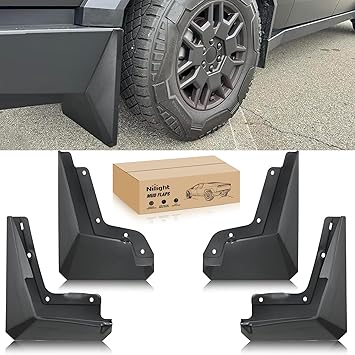
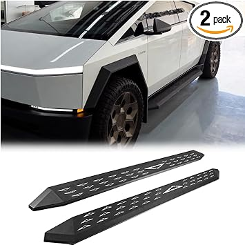
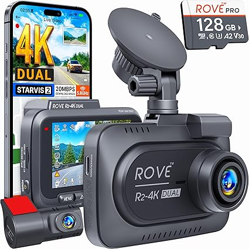
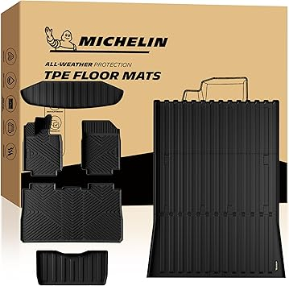
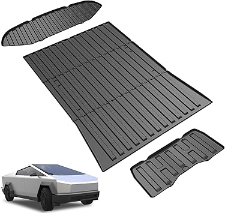

← cybertruckgen1.com
Cybertruckgen1 — A Practical 2026 Guide
May 2026
There's a reason cybertruckgen1 is trending right now. People want quality without overpaying, and 2026 delivers solid options at every price point.
Key Features Worth Paying For
- Brand track record — Established cybertruckgen1 brands have more to lose from bad products. That accountability matters.
- Build quality — Cheap cybertruckgen1 fall apart fast. Look for solid construction and quality materials.
- Verified reviews — Focus on 4+ star products with 50+ verified reviews. Ignore anything with only a handful of ratings.
- Warranty — Real warranty coverage (1+ year) signals a manufacturer that stands behind their product.
- Material grade — Higher-grade materials in cybertruckgen1 last longer and perform better, even when designs look similar.
Best Value Picks





Real-World Tips
- Set a firm budget before browsing. It's easy to creep up $50-100 comparing cybertruckgen1 features.
- Amazon's return policy removes most of the risk when buying cybertruckgen1 you haven't seen in person.
- Between two options? Go with the one that has more reviews. Volume of feedback matters for cybertruckgen1.
Wrapping Up
We update our cybertruckgen1 reviews as new products launch. Bookmark cybertruckgen1.com for the latest.
Affiliate Disclosure: As an Amazon Associate, we earn from qualifying purchases. This doesn't affect our recommendations.